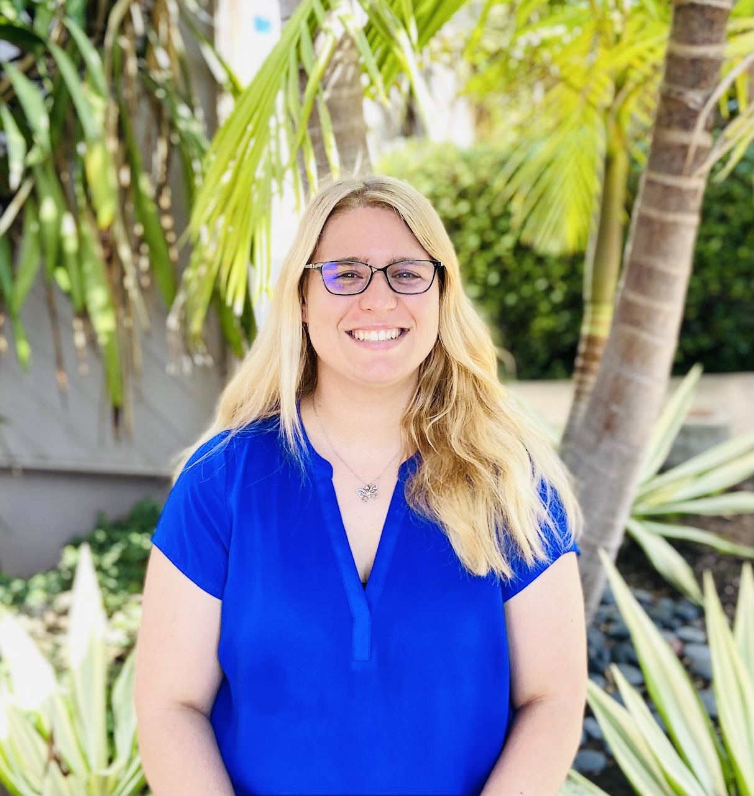
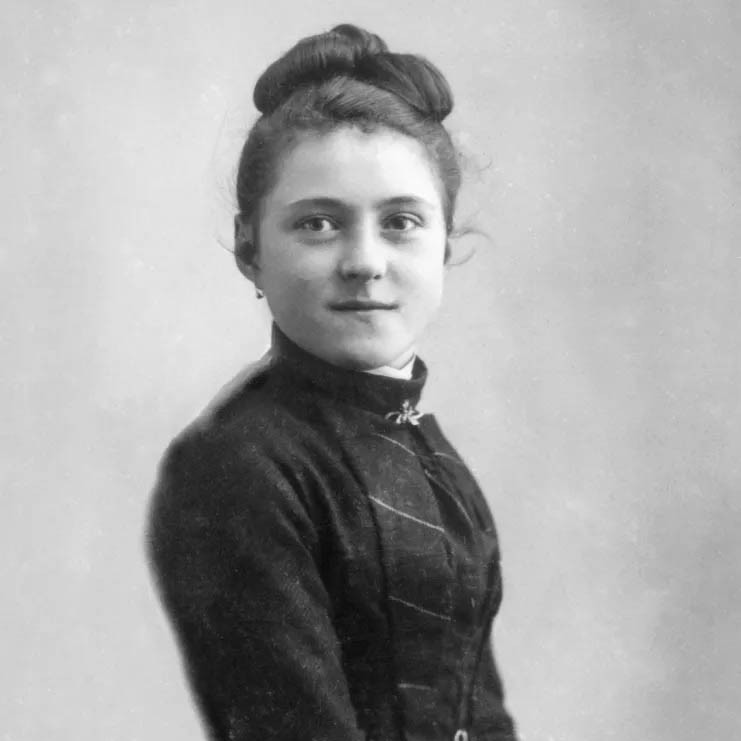

About
Little Way Speech Therapy is a pediatric private practice serving children and families throughout San Diego County.
The practice is rooted in thoughtful, individualized care with a deep commitment to supporting each child’s unique path toward communication and connection.

Little Way Speech Therapy is owned and operated by Kathleen “Kat” Winger, M.S., CCC-SLP, a licensed pediatric speech-language pathologist who has been serving children and families since 2019.
Her clinical approach blends evidence-based practice with a warm, relationship-centered style that prioritizes connection, trust, and meaningful progress.
Kat has training in PROMPT, Kaufman, Lidcombe, TalkTools, Orton-Gillingham, Lively Letters, and Natural Language Acquisition, allowing therapy to be thoughtfully tailored to each child’s needs.
Mission
Little Way Speech Therapy is grounded in the belief that meaningful growth happens through small, consistent moments of care. Inspired by St. Thérèse of Lisieux’s “Little Way,” this philosophy emphasizes patience, compassion, and the understanding that even the smallest steps forward matter.

Core Values
Individualized Care
Each child’s communication journey is unique. Therapy is thoughtfully designed to support individual strengths, needs, and developmental goals.
Family Collaboration
Caregivers are an essential part of the process. Collaboration ensures that progress continues beyond sessions and into everyday life.
Evidence-Based Practice
Services are guided by current research, clinical expertise, and approaches that are responsive to each child’s development.